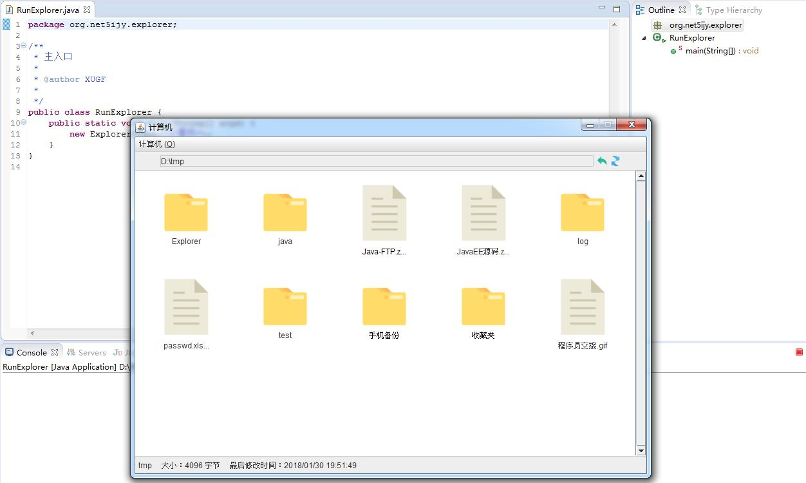

第五十五节 Swing 开发简单资源管理器程序（开发核心功能）
一、主面板显示文件列表
1、 添加字段
currentDir 字段用来保存当前目录的 File 对象
parentDir 字段用来保存上级目录的 File 对象
currentFileArray 字段用来保存当前目录子文件的 File 对象数组
labelFileMap 字段保存 Label 和 File 下标的关系，以便可以获取到点击的 Label 所对应的 File 索引
// 当前目录 private File currentDir = null; // 上级目录 private File parentDir = null; // 当前目录的全部子文件 private File[] currentFileArray = {}; // 保存主面板中Label和子文件index的对应关系 private Map<JLabel, Integer> labelFileMap = new HashMap<JLabel, Integer>();
2、 编写方法向主面板添加文件 Label
该方法需要传入一个 File[] 对象，内部会判断数组长度来设置主面板布局方式，然后遍历数组获取 File 对象创建 Label 在主面板显示，需要特殊注意两点：
1）为 Label 添加鼠标监听器，以便在鼠标点击、移入、移出时做出响应
2）使用 labelFileMap 保存 Label 和 File 下标的关系，以便可以获取到点击的 Label 所对应的 File 索引
/** * 在主面板显示文件 * * @param files 需要显示的文件数组 */ private void listFileToPanel(File[] files) { // 把主面板清空 this.mainPanel.removeAll(); // 为主面板设置布局 if (files.length < 15) { this.mainPanel.setLayout(new GridLayout(3, 5, 25, 25)); } else { int rows = files.length % 5 == 0 ? files.length / 5 : files.length / 5 + 1; this.mainPanel.setLayout(new GridLayout(rows, 5, 25, 25)); } String fileName = ""; File f = null; JLabel l; // 遍历数组，逐一在面板显示 for (int i = 0; i < files.length; i++) { f = files[i]; // 获取文件名或路径 // 长度如果大于10则只显示前10个字符，后面使用点替换 if (f.getName() == null || "".equals(f.getName())) fileName = f.getAbsolutePath(); else fileName = f.getName().length() <= 10 ? files[i].getName() : files[i].getName().substring(0, 10) + "..."; // 创建JLabel显示单个文件 // 根据文件/目录显示不同的图片效果 l = new JLabel(fileName, new ImageIcon(ImageUtil.getImage(f .isFile() ? "image_file" : "image_folder")), SwingConstants.CENTER); l.setVerticalTextPosition(JLabel.BOTTOM); l.setHorizontalTextPosition(JLabel.CENTER); l.setToolTipText(f.getName());// 设置提示信息 l.setCursor(new Cursor(Cursor.HAND_CURSOR));// 鼠标移入显示手形 l.addMouseListener(new FileLabelMouseListener());// 添加鼠标移入、移出、点击监听 this.labelFileMap.put(l, Integer.valueOf(i));// 保存对应关系 this.mainPanel.add(l);// 添加到主面板 } // 如果文件数组长度小于15，则使用空白JLabel填充剩余的位置 if (files.length < 15) { for (int i = 0; i < 15 - files.length; i++) this.mainPanel.add(new JLabel(" ")); } this.validate(); }
3、 初始化主面板
这个步骤比较简单，主要就是在创建窗口对象时调用一个 init 方法，初始化根目录内容
/** * 第一次打开窗口显示根目录 * 首先获取系统根目录 * 把根目录显示到主面板区域 * 最后设置当前文件数组 */ private void init() { // 获取系统根目录 File[] roots = File.listRoots(); // 把根目录显示到主面板区域 listFileToPanel(roots); // 设置当前文件数组 this.currentFileArray = roots; }
在构造方法中调用这个方法即可
二、添加文件 Label 鼠标监听
/** * 文件JLabel的鼠标监听器 * 当鼠标移入文件标签时，标签前景色变为红色，移出变为黑色 * 点击时会判断是否为目录，如果是目录，会获取此目录子文件并显示在面板中，而且当前目录、父级目录、当前文件数组都会重新设置 * 鼠标按下是会在详细信息条显示此File的详情 * 当前位置文本域会变为此目录 */ private class FileLabelMouseListener extends MouseAdapter { private SimpleDateFormat format = new SimpleDateFormat("yyyy/MM/dd HH:mm:ss"); @Override public void mouseClicked(MouseEvent e) { } @Override public void mouseEntered(MouseEvent e) { } @Override public void mouseExited(MouseEvent e) { } @Override public void mousePressed(MouseEvent e) { } }
1、 双击事件
双击文件 Label 会跳转到指定目录并显示这个目录下面的文件，在工具栏显示当前目录位置信息
@Override
public void mouseClicked(MouseEvent e) {
int count = e.getClickCount();
JLabel jl = (JLabel) e.getSource();
int index = labelFileMap.get(jl);
File clickedFile = currentFileArray[index];
// 双击
if (count == 2) {
// 如果File存在且为目录
if (clickedFile.exists() && clickedFile.isDirectory()) {
// 设置当前目录
currentDir = clickedFile;
// 设置父级目录
if (clickedFile.getParentFile() != null)
parentDir = clickedFile.getParentFile();
// 获取目录下文件并显示
File[] files = currentDir.listFiles();
currentFileArray = files;
listFileToPanel(files);
// 设置当前位置
locationText.setText(currentDir.getAbsolutePath());
}
}
validateAndGC();
}
2、 鼠标移入、移出事件
鼠标移入文件 Label 时显示红色，移出恢复为黑色
@Override
public void mouseEntered(MouseEvent e) {
JLabel jl = (JLabel) e.getSource();
jl.setForeground(Color.red);
}
@Override
public void mouseExited(MouseEvent e) {
JLabel jl = (JLabel) e.getSource();
jl.setForeground(Color.black);
}
3、 单击事件
在状态栏显示文件的名称、字节数、最后修改时间信息
@Override
public void mousePressed(MouseEvent e) {
JLabel jl = (JLabel) e.getSource();
int index = labelFileMap.get(jl);
File clickedFile = currentFileArray[index];
if (clickedFile.exists())
fileDetail.setText(clickedFile.getName() + " 大小："
+ clickedFile.length() + " 字节 最后修改时间："
+ format.format(new Date(clickedFile.lastModified())));
else
fileDetail.setText(" ");
validateAndGC();
}
三、回退、刷新按钮功能
1、 回退功能
返回到上级目录并显示相关信息
/** * 上级按钮监听器 */ private class BackButtonMouseListener extends MouseAdapter { @Override public void mouseClicked(MouseEvent e) { if (parentDir != null) { // 当父级目录不为空 // 当前目录设置为父级目录 currentDir = parentDir; // 获取新的父级目录 if (parentDir.getParentFile() != null) parentDir = parentDir.getParentFile(); else parentDir = null; // 获取子文件并显示 File[] files = currentDir.listFiles(); currentFileArray = files; listFileToPanel(files); // 设置当前位置 locationText.setText(currentDir.getAbsolutePath()); } else { // 当父级目录为空 // 当前目录设置为空 currentDir = null; // 获取根目录并显示 File[] files = File.listRoots(); currentFileArray = files; listFileToPanel(files); // 设置当前位置为“计算机” locationText.setText("计算机"); } validateAndGC(); } }
在添加按钮时注册监听器
this.backButton.addMouseListener(new BackButtonMouseListener());
2、 刷新功能
/** * 刷新按钮监听器 */ private class RefreshCurrentDirListener extends MouseAdapter { @Override public void mouseClicked(MouseEvent e) { refresh(); } } void refresh() { File[] files = null; if (currentDir == null) files = File.listRoots(); else files = currentDir.listFiles(); currentFileArray = files; listFileToPanel(files); validateAndGC(); }
在添加按钮时注册监听器
this.refreshButton.addMouseListener(new RefreshCurrentDirListener());
四、其他
1、 刷新窗口、释放内存
void validateAndGC() {
this.validate();
System.gc();
}
2、 ImageUtil 类
public final class ImageUtil {
/**
* 刷新按钮图标的key
*/
public static final String IMAGE_ICON_REFRESH = "image_icon_refresh";
/**
* 上级按钮图标的key
*/
public static final String IMAGE_ICON_BACK = "image_icon_back";
/**
* 目录图片的key
*/
public static final String IMAGE_FOLDER = "image_folder";
/**
* 文件图片的key
*/
public static final String IMAGE_FILE = "image_file";
private ImageUtil() {
super();
}
private static final String IMAGE_PATH = System.getProperty("user.dir") + File.separator + "images";
private static Map<String, Image> images = new HashMap<String, Image>();
static {
images.put(
IMAGE_ICON_REFRESH,
Toolkit.getDefaultToolkit().createImage(
IMAGE_PATH + File.separator + "icon" + File.separator
+ "refresh_16.png"));
images.put(
IMAGE_ICON_BACK,
Toolkit.getDefaultToolkit().createImage(
IMAGE_PATH + File.separator + "icon" + File.separator
+ "back_16.png"));
images.put(
IMAGE_FOLDER,
Toolkit.getDefaultToolkit().createImage(
IMAGE_PATH + File.separator + "folder_74.png"));
images.put(
IMAGE_FILE,
Toolkit.getDefaultToolkit().createImage(
IMAGE_PATH + File.separator + "file_75px.png"));
}
public static Image getImage(String key) {
return images.get(key);
}
}
五、运行程序
package org.net5ijy.explorer;
public class RunExplorer {
public static void main(String[] args) {
new ExplorerFrame("计算机");
}
}
运行效果如下：

第五十四节 Swing 开发简单资源管理器程序（开发界面结构）
第五十六节 Swing 开发简单资源管理器程序（开发目录树功能）
加入 QQ 群：5ijy网站开发交流
 ，获取更多源代码和开发环境配置信息。
，获取更多源代码和开发环境配置信息。